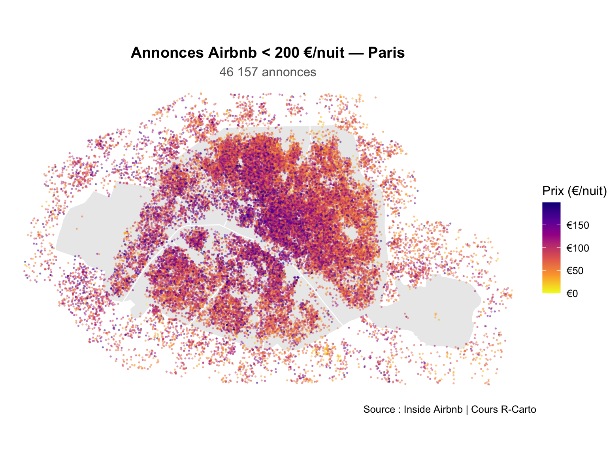
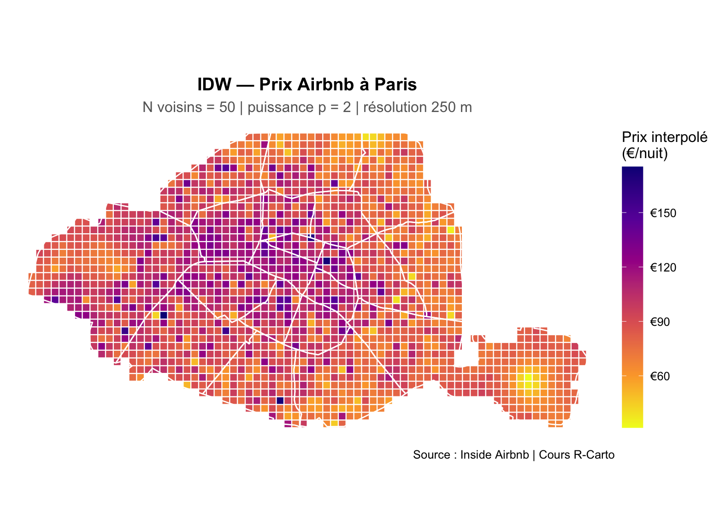
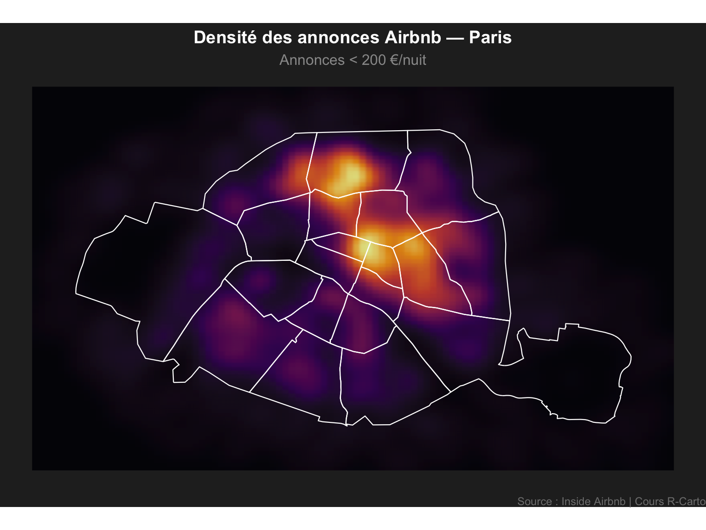
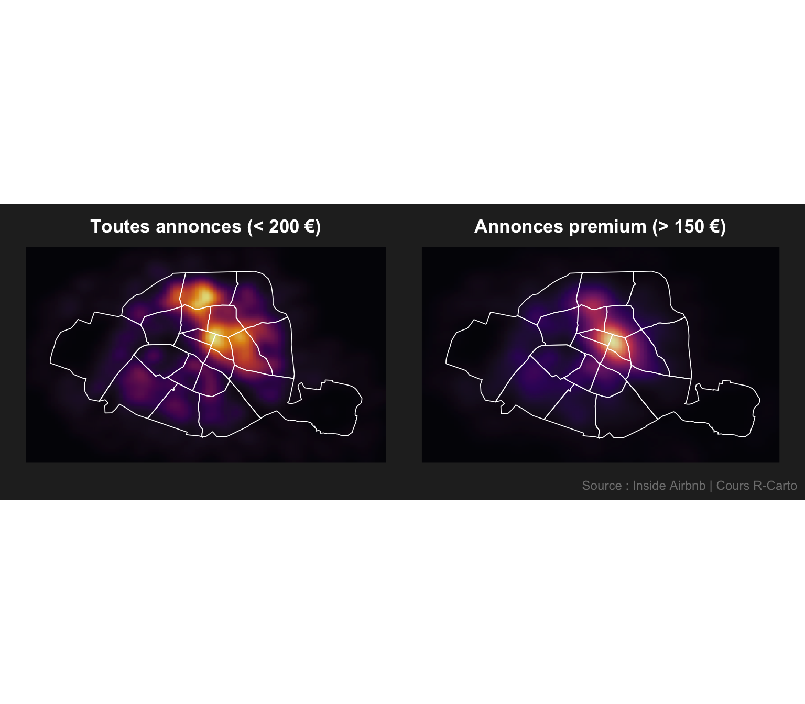

library(sf)
library(gstat)
library(ggplot2)
library(dplyr)
library(scales)
library(patchwork)15 Interpolation Paris : Corrigé
ImportantCorrigé — à consulter après avoir essayé par vous-mêmes
Ce document contient les réponses à l’exercice Paris posé dans Lissage et Interpolation Spatiale.
15.1 Partie A — IDW sur le prix Airbnb
15.1.1 Charger et préparer les données
PA <- read_sf("data/Paris/Polygons/arrondiss_lambert.shp") |>
st_transform(2154)
listings_sf <- read.csv("data/Paris/airbnb/listings.csv") |>
st_as_sf(coords = c(8, 7)) |>
st_set_crs(4326) |>
st_transform(st_crs(PA))
listings_filtered <- listings_sf |> filter(price < 200)
cat("Nb annonces filtrées :", nrow(listings_filtered), "\n")Nb annonces filtrées : 46157 ggplot() +
geom_sf(data = PA, fill = "grey92", color = "white", linewidth = 0.4) +
geom_sf(data = listings_filtered, aes(color = price),
size = 0.3, alpha = 0.4) +
scale_color_viridis_c(
option = "plasma", direction = -1,
name = "Prix (€/nuit)",
labels = label_dollar(prefix = "€")
) +
labs(
title = "Annonces Airbnb < 200 €/nuit — Paris",
subtitle = paste0(format(nrow(listings_filtered), big.mark = " "), " annonces"),
caption = "Source : Inside Airbnb | Cours R-Carto"
) +
theme_void(base_size = 12) +
theme(
plot.title = element_text(face = "bold", hjust = 0.5),
plot.subtitle = element_text(color = "grey40", hjust = 0.5)
)
15.1.2 Appliquer l’IDW
listings_sp <- sf::as_Spatial(listings_filtered)
gs <- gstat(
formula = price ~ 1,
data = listings_sp,
nmax = 50,
set = list(idp = 2)
)
grid_sf <- st_make_grid(PA, cellsize = 250, what = "centers") |>
st_as_sf() |>
st_filter(PA)
idw_sf <- predict(gs, sf::as_Spatial(grid_sf)) |>
st_as_sf() |>
rename(pred = var1.pred)[inverse distance weighted interpolation]ggplot() +
geom_sf(data = idw_sf, aes(color = pred), size = 2.2, shape = 15) +
scale_color_viridis_c(
option = "plasma", direction = -1,
name = "Prix interpolé\n(€/nuit)",
labels = label_dollar(prefix = "€")
) +
geom_sf(data = PA, fill = NA, color = "white", linewidth = 0.5) +
labs(
title = "IDW — Prix Airbnb à Paris",
subtitle = "N voisins = 50 | puissance p = 2 | résolution 250 m",
caption = "Source : Inside Airbnb | Cours R-Carto"
) +
theme_void(base_size = 12) +
theme(
plot.title = element_text(face = "bold", hjust = 0.5),
plot.subtitle = element_text(color = "grey40", hjust = 0.5),
legend.key.height = unit(1.5, "cm")
)
TipEffet des paramètres
nmaxpetit (ex. 10) → surface très localisée, forte influence des points isolésnmaxgrand (ex. 100) → surface plus lisse, influence étendueidpgrand (ex. 4) → décroissance rapide, les points lointains n’influencent presque pascellsizepetite (ex. 100 m) → image plus fine mais calcul plus lent
15.2 Partie B — Heatmap de densité Airbnb
15.2.1 Densité de toutes les annonces
coords_all <- st_coordinates(listings_filtered) |>
as.data.frame() |>
setNames(c("x", "y"))
ggplot() +
geom_sf(data = PA, fill = "grey15", color = "grey35", linewidth = 0.4) +
stat_density_2d(
data = coords_all,
aes(x = x, y = y, fill = after_stat(density)),
geom = "raster",
contour = FALSE,
interpolate = TRUE,
alpha = 0.85
) +
scale_fill_viridis_c(option = "inferno", name = "Densité", guide = "none") +
geom_sf(data = PA, fill = NA, color = "white", linewidth = 0.4) +
labs(
title = "Densité des annonces Airbnb — Paris",
subtitle = "Annonces < 200 €/nuit",
caption = "Source : Inside Airbnb | Cours R-Carto"
) +
theme_void(base_size = 12) +
theme(
plot.title = element_text(face = "bold", hjust = 0.5, color = "white"),
plot.subtitle = element_text(color = "grey60", hjust = 0.5),
plot.caption = element_text(color = "grey50", size = 9),
plot.background = element_rect(fill = "grey15", color = NA)
)
15.2.2 Comparaison : toutes annonces vs annonces > 150 €/nuit
coords_premium <- listings_filtered |>
filter(price > 150) |>
st_coordinates() |>
as.data.frame() |>
setNames(c("x", "y"))
p1 <- ggplot() +
geom_sf(data = PA, fill = "grey15", color = "grey35", linewidth = 0.3) +
stat_density_2d(
data = coords_all,
aes(x = x, y = y, fill = after_stat(density)),
geom = "raster", contour = FALSE, interpolate = TRUE, alpha = 0.85
) +
scale_fill_viridis_c(option = "inferno", guide = "none") +
geom_sf(data = PA, fill = NA, color = "white", linewidth = 0.3) +
labs(title = "Toutes annonces (< 200 €)") +
theme_void(base_size = 11) +
theme(plot.title = element_text(face = "bold", hjust = 0.5, color = "white"),
plot.background = element_rect(fill = "grey15", color = NA))
p2 <- ggplot() +
geom_sf(data = PA, fill = "grey15", color = "grey35", linewidth = 0.3) +
stat_density_2d(
data = coords_premium,
aes(x = x, y = y, fill = after_stat(density)),
geom = "raster", contour = FALSE, interpolate = TRUE, alpha = 0.85
) +
scale_fill_viridis_c(option = "magma", guide = "none") +
geom_sf(data = PA, fill = NA, color = "white", linewidth = 0.3) +
labs(title = "Annonces premium (> 150 €)") +
theme_void(base_size = 11) +
theme(plot.title = element_text(face = "bold", hjust = 0.5, color = "white"),
plot.background = element_rect(fill = "grey15", color = NA))
p1 + p2 +
plot_annotation(
caption = "Source : Inside Airbnb | Cours R-Carto",
theme = theme(
plot.background = element_rect(fill = "grey15", color = NA),
plot.caption = element_text(color = "grey50", size = 9)
)
)
15.3 IDW vs Heatmap — quelle méthode pour quelle question ?
| IDW | Heatmap | |
|---|---|---|
| Question | Quel prix prédit-on ici ? | Combien d’annonces ici ? |
| Variable | Prix (attribut des points) | Présence des points uniquement |
| Résultat | Surface de valeurs continues | Surface de densité |
| Usage | Estimer une variable manquante | Identifier des zones de concentration |
← Retour au cours : Lissage et Interpolation
Dr. Elisabetta Pietrostefani — Directrice Adjointe, Geographic Data Science Lab — Université de Liverpool | Co-Directrice, Imago : Data Service for Imagery | Chercheuse Associée, London School of Economics